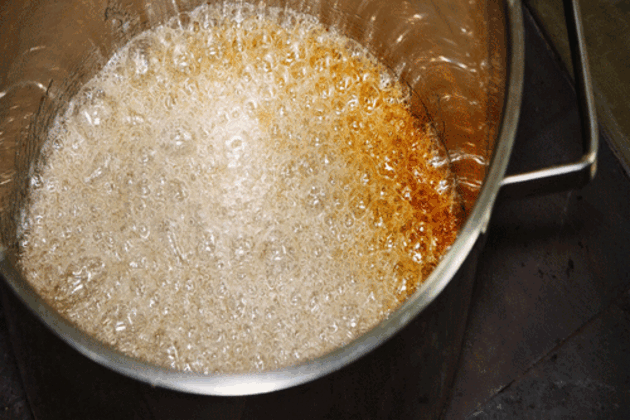

How to make Ghevar Step by Step:
1.Prepare the sugar syrup for Ghevar Ghevar is an easy-to-make recipe and can be prepared with some easily available ingredients. To begin with, you need to prepare the sugar syrup of one string consistency. Then, take a large wide bowl and add solidified ghee in it. Take one ice cube at a time and rub the ghee vigorously. Take more ice cubes as required till the ghee becomes very white in colour.
2.Prepare the Ghevar batter Then add milk, flour and one cup water. Mix these ingredients to make a smooth batter. Dissolve food colour in water and add to the batter. Add more water as required. The consistency of the batter should be fairly thin.

3.Cook the Ghevar Then take an aluminium or steel cylindrical container. Make sure that its height is at least 12″ and diameter is of 5-6″. Fill half of the container with ghee. Heat it and once the ghee is hot enough, then take a 50 ml, a glassful of the batter. Pour in centre of ghee, slowly in one continuous thread-like stream. Allow the foam to settle.

4.Dip the Ghevar in sugar syrup Pour one more glassful in a hole formed in the centre. When the foam settles again, loosen the Ghevar with an iron skewer inserted in the hole. Lift carefully at a slant and place on wire mesh to drain. Keep hot syrup in a wide flat-bottomed container to fit in the Ghevar. Then, dip the Ghevar in it and remove it to drain out the excess syrup. Then, keep aside on a mesh. This will take out the extra syrup.

5.Cool the Ghevar and garnish with dry fruits Alternatively, pour some syrup evenly all over, keeping Ghevar in a mesh placed over a container. Let it cool and settle down, then top it with edible silver foil. Splash a few drops of saffron milk, sprinkle some chopped dry fruits and 1 tsp of cardamom powder. Serve it with savouries like Pakoras, Kachoris and Samosas.